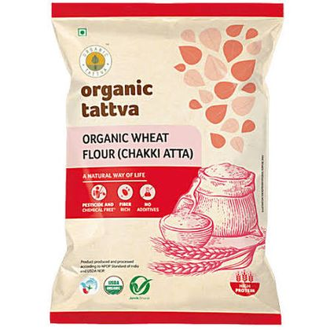
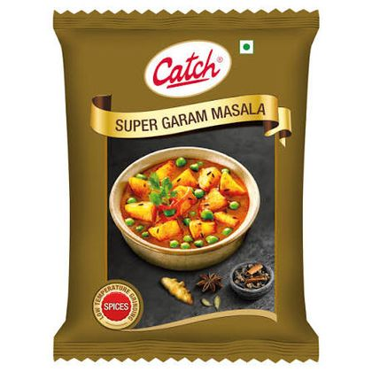
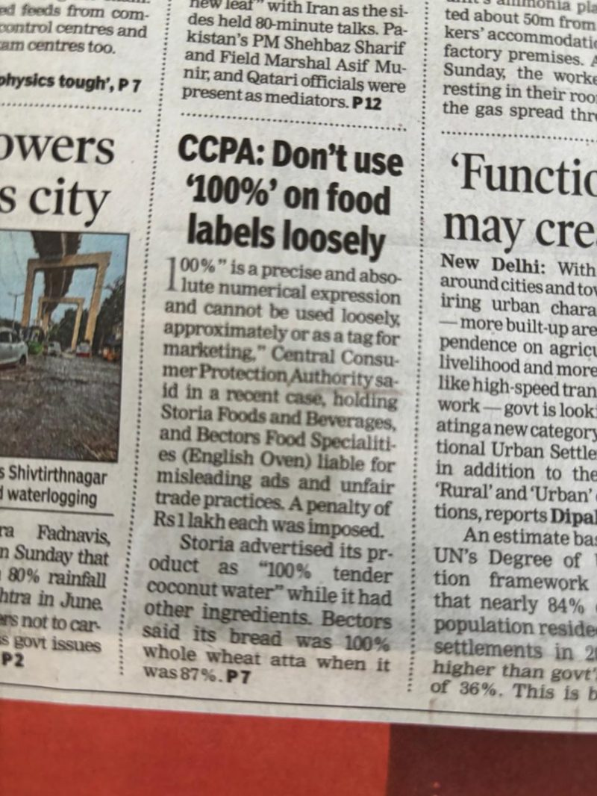

Build a shared, fact-based understanding of category, competition and consumer.
- Category & consumer insight base
- Trust tension map + segmentation
- Imitation risk heatmap
- Internal diagnosis snapshot
ISB CGMO Cohort II · Business Leadership Challenge
Verified in the fields. Honest on the shelves.
Team 1 Sabika Mirza · Sharon Batliwalla · Syed Kashif Ali · Sonu Adarsh · Abhishek Nandan
Start here
Every section that follows is evidence for one of these six steps. If you read nothing else, read this.
"Pesticide-free" is not a regulated term in India. Demand is real — 84% of consumers are worried about food safety — but no brand has codified the standard, so the words commoditise before they mean anything.
See the evidence →Mainstream dal sits at ₹136–157/kg. Certified organic sits at ₹255–306. Between them is an accessible-premium corridor at ₹150–250 with no trust code attached to it — and it is already being squeezed from below.
See the price ladder →Half of buyers say they'd pay nothing extra — and say why: they don't trust the claims. But 60% would pay 20–30% more if someone they trusted had independently verified it. That is a proof problem wearing a price mask.
Meet the four segments →230+ pesticide checks per batch, batch-level testing, failing lots rejected — all invisible to the shopper. Competitors lead with logos; DHF can lead with data, and put the farmer's name and face on it.
See the proof benchmark →Positioning, promise and every communication delivery hang off a single measurable metric — Verified Purchase Rate. Revenue is the outcome; verification is the lever.
See the North Star →Spices carry the margin, quick commerce carries the reach, and DeHaat's control of the farm input — not the harvest test — is the only asset a competitor cannot buy inside five years.
See the ask →Part 01
What we were asked to do, and the evidence we built to answer it.
The brief
Not by outspending organic, but by creating and owning a category that does not yet formally exist. We broke that into four phases.
Build a shared, fact-based understanding of category, competition and consumer.
Define what DHF must own in the mind of the consumer.
Decide where to play and how to win — the moat.
Build a sustainable, funded path to growth.
Nothing in this document is asserted without one of these four sources behind it.
Part 02
A market with real demand, real money, and nobody holding the definition.
The whitespace
The gap here is regulatory and semantic before it is commercial. Indian consumers are worried about what is on their food and willing to pay to avoid it — but there is no agreed meaning of "pesticide-free", so the willingness has nowhere to land.
Three nested numbers. Select each to see how it was built.
Pesticide-free food across India's top 300 cities. Anchored to Technopak's 5–6% organic-of-packaged-food potential (₹35,000 Cr), then uplifted 1.3–1.5× because pesticide-free prices below organic and therefore reaches further down the income curve.
A 28% serviceability factor. Staples, pulses, rice, spices and select value-added lines, sold through quick commerce, e-commerce and modern trade, to roughly 25 million health-conscious households.
The three-year ambition: 2.2–2.6% of SAM and 0.6–0.7% of TAM. The five-year aspiration is ₹700–800 Cr. Small enough to be credible, large enough to define the category.
Indian shoppers will pay around 20% more for low-impact products — the highest of eleven countries surveyed. Yet roughly 60% fear greenwashing and only about 29% trust corporate environmental claims.
Sources: Technopak Report 2022–23 · PwC Voice of the Consumer 2025 · FSSAI surveillance data.
Category structure
Every brand on the shelf sits on a rung defined by what it claims and what it charges. Plotting toor dal by the kilo makes the gap obvious: there is nothing credible between value pulses and certified organic.
Five archetypes, each with a different trust story — and each with a hole in it.


Value and mainstream sit at ₹136–157. Certified organic sits at ₹255–306. DHF belongs in the accessible-premium corridor at ₹150–250 per kg — and that corridor is already being squeezed from below by BB Royal Organic at ₹157. The window is open, but it is closing.
Proof & claims benchmarking
We took the four most credible players in the category and asked one question of each: if a shopper wanted to check the claim, could they? Only one brand passes — and DHF, which does the most testing, shows the least.

250-parameter farm-level residue test, with a QR on every pack leading to that batch's report. The category benchmark.
EU, USDA and NPOP certification across 1.4 lakh acres and 27,500 farmers. The logos are the proof — there is no consumer-facing test report.
Brand trust, an "unpolished" visual cue and a celebrity anchor. No public batch-level residue disclosure.

Certification-heavy — USDA, EU, NPOP, Kosher — across 35+ export markets. Logos, not data.

230+ pesticide checks, batch-level testing, failing lots rejected. All of it invisible to the shopper.
Scored out of 10 on how coherently the brand says one thing across pack, app and advertising.
24 Mantra is expected to reach 9/10 within 12–18 months of ITC integration. The clock on differentiation is already running.
We stress-tested eleven DHF advantages against how quickly a well-funded competitor could replicate them. The pattern is stark: everything cheap to copy is already copied.
Untapped opportunity
Every other player proves safety by testing the harvest or buying a certificate. DHF is the only one that can prevent the problem at the input — because it already runs the agritech network the farmer plants with. No brand occupies that position today.
We prevent pesticide use at source, rather than testing for it afterward.
Current use in brand communication near zeroThe quality trajectory is known before harvest, not discovered after rejection.
Current use in brand communication zeroSupply exclusivity earned through 30–50% better farmer returns.
Current use in brand communication minimalDHF's shelf price is inconsistent across platforms. The accessible-premium corridor is only defensible if the price is coherent everywhere the shopper looks.
Part 03
Thirty-one conversations and 305 surveys, turned into four people you can sell to.
Qualitative research · 31 respondents across 6 cities
We ran in-market intercepts, in-depth interviews and ethnography before writing a single survey question. What came back was not apathy — it was confusion held with total confidence.
Consumers do not merely lack information — they hold incorrect information that feels correct. You cannot fill a gap the shopper does not believe exists.
73% agree some adulteration is unavoidable. The risk is known and quietly accepted — highest of all in chilli.
Confidence comes from energy levels, weight and blood work of self and family — not from anything printed on a pack.
Believed to be "grown from lotus stems" and "processed like popcorn". Neither is accurate, and it is the only category with no residue conversation at all.
Four verbatims that between them explain the whole problem.
Pesticides are sometimes put in soil, not on fruits. This makes them pesticide-free.
In-market intercept, Bengaluru
There is no such thing as Pesticide-Free. We have done enough research.
In-market intercept, Bengaluru
Pesticide-free means no use of pesticides at any stage of the lifecycle of the produce.
Organic farmer, Hyderabad — the most accurate definition in the sample
Testing information plays a very important role. Knowing the source and certifications matters most in rice and dal — they are staples.
Benifer Lewis, 45, Mumbai
Quantitative research by 1Lattice, commissioned by DHF
The qualitative work told us what to ask. The survey was then designed backwards from the analysis we intended to run — a 15-item attitude battery written specifically so factors could be extracted from it afterwards.
Online panel, fielded by 1Lattice on 28–29 May 2026. n = 305 after quality screening; report dated 12 June 2026.
Five metros — Delhi NCR 31%, Bengaluru 21%, Mumbai 17%, Ahmedabad 15%, Pune 15%.
Category bases — rice n=253, tur dal n=241, red chilli n=164, makhana n=58. Makhana is reported as directional only. Every segment claim in this document rests on the full n=305 base, never on a category sub-base.
Percentage using each channel, multi-select.
This is the exact cohort DHF already sells to — and the cohort that will decide whether the category forms and what shape it takes.
The analytical pipeline
Rather than segment on age or income — which the data shows are poor predictors — we let the attitudes group themselves. Fifteen statements collapsed into three underlying factors, and those factors sorted 305 people into four clusters.
The number beside each statement is its loading on that factor — how strongly it pulls in that direction.
Trust is earned through people and events, not systems and symbols.
The system is corrupt, and I will pay to exit it. This is the financial engine of premium food brands.
I will check it myself. Show me the evidence.
The statistics didn't create them; they revealed groups already present in the data. At k=3, Guardians and Trusters merge into one segment you cannot sell to differently.
Segmentation output
Read the factor columns as distances from the average shopper: positive means more of that trait than the sample mean, negative means less. Guardians are the only cluster positive on all three at once — which is what makes them both the largest and the most valuable.
| Segment | n (%) | F1 Social | F2 Distrust | F3 Vigilance | Trust in cert. claim | Would pay 11%+ |
|---|---|---|---|---|---|---|
| Proof-Hungry Guardians | 109 (36%) | +0.46 | +0.47 | +0.69 | 4.4 / 5 | 54% |
| Social Trusters | 62 (20%) | +0.65 | +0.17 | −0.89 | 3.6 / 5 | 34% |
| Passive Defaulters | 80 (26%) | −0.39 | −1.05 | −0.34 | 3.5 / 5 | 6% |
| System Fatalists | 54 (18%) | −1.09 | +0.41 | +0.13 | 3.6 / 5 | 22% |
It peaks in the ₹60K–1L band at 71% and falls to 32% in ₹1–1.5L. Geographically it runs from Delhi NCR at 64% down to Ahmedabad at 33% — which makes Delhi NCR the launch market on belief, not on affluence.
This is the single most important finding in the consumer work.
Stated willingness to pay under distrust is a floor, not a ceiling. Fix the proof and the ceiling moves.
The buyer personas
Each cluster was given a face, a household and a purchase story, so a marketer, a category manager and a farmer can all picture the same person. Select one to open the full profile.
Guardians convert fast on facts. Trusters need a voice of assurance. Defaulters need shelf presence and price parity. Fatalists need to be shown the imperfections before they will believe the perfections.
The targeting decision
Four segments, but not four campaigns. Sequencing matters more than coverage: win the segment that responds to proof, and their verification becomes the social proof that unlocks the next one.
Largest segment, highest willingness to pay, and the only one that responds to the proof DHF already generates.
Activated when the Guardians' verification becomes social proof. Doctor endorsement bridges both segments at once.
Proof-heavy messaging misfires here. Capture cheaply in phase two, once the category already feels default.
Smallest and hardest. Needs a separate radical-transparency, farmer- and founder-direct playbook.
Percentage naming it as the single top driver.
DHF leads with the claim only 6% find convincing, and barely uses the endorsement 44% name first. Doctor endorsement wins in every segment — 55% of Trusters, 56% of Defaulters, 50% of Fatalists. Only Guardians rank the QR lab report first.
Win Guardians with proof → convert their advocacy into the social proof that activates Trusters → ride the combined 56% into default category leadership.
Guardians are 36% of decision-makers but hold roughly 60% of all stated premium-rupee intent.
Part 04
Turning a back-end quality system into the thing a shopper can actually check.
The shelf today
Walk a modern trade aisle and count the trust signals. They contradict each other, none can be checked, and the shopper responds the only way she can — by discounting all of them equally. Generic language does not add trust; it adds noise.
Each sends a different trust signal to the same shopper — which is precisely why none of them lands.


Not another adjective — a verifiable proof mechanism: a QR code, a batch, and a lab result the shopper can open in three seconds.
Six months of coverage pointing the same direction: regulators cracking down on unverifiable claims, and consumers reading about residue.



Brand manifesto
The future of food isn't claimed on a label; it's proven in the field. Every seed we recommend, every practice we track, and every farmer we name is how we turn honesty into something you can verify, not just believe.
We meet uncertainty with patience and grit, learning from the land and adapting so farmers can thrive through seasons and shocks.
Transparency is a mechanism, not a promise to be broken. You can check batch data, farmer names and practices. They are not claims you're asked to believe.
We turn complex agri-data into one clear signal, so farmers can act with confidence and consumers can trust what they see instantly.
Not progress for its own sake, but progress powered by DeHaat's own agri-tech, in service of tradition — not instead of it.
We bridge Krishi wisdom and modern methods, so farming becomes more productive, profitable and sustainable — and young people see agriculture as a modern opportunity.
The farmer isn't a sourcing story we tell; they're the name on the batch, accountable and credited. When farmers prosper, supply is reliable.
We are Honest Farms. Verified in the fields, honest on the shelves.
Brand purpose
To nurture soil and skills, to do business honestly, and to prove it — batch by batch, farmer by farmer.

A promise about the value delivered to the customer — not a claim about the company.
Making back-end rigour visible
Most traceability QR codes lead to a certificate — a document nobody reads. Ours should lead to a person. Seven mechanics turn a compliance feature into the most persuasive asset the brand has.
Scan the pack and land on that farmer's own microsite — village, harvest date, daily life, consumer messages, and a downloadable pesticide-free certificate.
Like wine — Bordeaux, Nice, Nashik, Napa Valley. Provenance that proves itself by being specific.
Unscripted reels, voice notes and live harvest streams. Rougher and less polished than a typical ad — which is exactly what signals "real" to a sceptical buyer.
Rotating, handwritten notes from the actual farmer of that batch.
No advance notice needed. This is what wins the "prove me wrong" archetype.
The farmers — not agency promoters — run demos at flea markets and housing societies to drive trial.
Consumers review the farmer and their field's produce, instead of the product they bought.


when the pesticide-free claim carries an independent certificate. A 5× uplift — the largest of any claim tested.
Brand architecture
Positioning at the top, benefits in the middle, and a specific meaning for each stakeholder at the bottom — so the same promise survives translation from the boardroom to the field.
No detectable residue.
You're no longer the only one keeping watch.
With every basket, from seed to plate.
DeHaat trains farmers for productivity, profitability and sustainability, with simplified agri-tech data that gives clear signals to consumers. Trust won with no hidden stories and no shortcuts.
Made to win Honest Farms' brand trust by showing superiority in back-end agri-tech — not just another category claim on apps and shelves.
Empowered to verify every batch, farmer and agri practice before they add to cart and put food on the table.
Hired and trained to demonstrate the spirit of progress — bringing Krishi wisdom and modern methods to make farming more productive, profitable and sustainable.
The North Star
Verified Purchase Rate — the percentage of purchases where a consumer engages a real proof point (a batch QR scan, a farmer profile, a lab report) before or after buying the product.
Scans the batch QR; visits the microsite to engage with farmers.
Confirms it with her doctor or her circle of influence.
Notices it's already on his app; repeat-buys anyway.
Watches unscripted farm content; takes up an audit invite from the farmer.
Revenue and share are outcomes. Verified Purchase Rate is the lever that sales, product and marketing continuously optimise.
Proof architecture
The standard behind the pack never changes. What changes is who delivers the proof, through which channel, and how fast it converts. Four buyers, four routes to the same truth.
"Scan the pack. See exactly what's inside."
"Ask your doctor. Then ask your sister. They've approved us."
"Same taste. Same price. Honestly, better choice."
"We'll show you the parts no brand talks about."
| Vandana | Meera | Karan | Sanjay | |
|---|---|---|---|---|
| Trust lever | Verified data (QR + lab) | Human endorsement | Familiarity, shelf presence | Radical transparency |
| Price perception | Premium OK, with proof | Modest premium if endorsed | Expects price parity | Suspicious of any premium |
| Key to win | Batch proof + doctor review | Get her circle to vouch | Be visible and taste-led | Show the imperfect parts |
Part 05
Where to sell it, what to sell, and what it costs to get there.
Internal diagnosis
Before designing the growth engine we audited eight half-years of actual revenue. The business is growing, but growing fastest in the block it talks about least — and depending on a single platform for a quarter of its income.
Cumulative revenue in ₹ Cr, with growth rate beside it.
Pulses are 56% of revenue and grow below the portfolio average. The base is heavy where the money is thinnest.
Revenue per MT fell 4.3% in FY26-H2 — a margin warning masked by tonnage growth.
Seven simultaneous taglines, no hierarchy, and "230+ quality checks" stated but never explained.
The growth ambition
Fourteen times the base in five years. That is aggressive, but it is built bottom-up from SKU, channel and city plans rather than a top-down multiple — and it turns EBITDA-positive in year three.

Portfolio design
The revenue plan and the margin plan are two different stories. Pulses stay the largest line, but almost the entire margin expansion comes from spices — a category DHF barely sells today.
Spices deliver the entire +5.8pp of margin expansion. A slipped spice launch is a slipped P&L.
The distribution roadmap
Thirteen and a half times the selling points at five times the revenue — which means the plan does not need better stores, it needs many more of them, opened faster than revenue per store dilutes.
The ceiling is what stops the plan from becoming a bet on one platform — the mistake the current 24% Zepto concentration already warns about.
Part 06
What DHF controls, how long it survives imitation, and what it costs to build.
Competitive defence
Every competitor can buy a certificate or commission a lab. None of them can decide what a farmer plants and sprays — because none of them run the agritech network the farmer already uses. That is the difference between a claim and a moat.
Bihar makhana · Uttarakhand jaggery · Gujarat Java peanut · and five more, owned end to end.
Five layers of defensibility, ordered by how long each survives a determined competitor.
DHF sits at L1. Only L3 and L4 survive imitation.

ITC bought 24 Mantra. Wingreens bought Safe Harvest. DHF has to build, certify and make this moat consumer-visible before ₹274 Cr of revenue makes it a target.
The scale blueprint
Losses for two years, then positive. Investment intensity falls from 38% to 30% of revenue — which means breakeven is not won by cutting, it is won by spreading the same rupees over far more revenue.
All figures ₹ Cr.
| FY27 | FY28 | FY29 | |
|---|---|---|---|
| Revenue | 104 | 168 | 274 |
| Investable margin | 27.6 | 50.2 | 86.6 |
| EBITDA | −12.4 | −7.9 | +4.7 |
DHF clears breakeven at ₹274 Cr only because a 43.1% gross margin buys ₹38 Cr that Farmley's 29% does not. No Indian clean-label brand between ₹75 Cr and ₹400 Cr is EBITDA-positive today.
Below every comparable in the set.
Category leadership
A category only becomes large if others are allowed in. DeHaat Honest Farms wins not by owning the words, but by owning the standard, the proof, and the relevance in consumers' lives — so that when anyone says pesticide-free, they mean this.
In line with FSSAI and ASCI requirements. The standard only holds if the language never overreaches.


धन्यवाद
Verified in the fields. Honest on the shelves.
Team 1 · ISB CGMO Cohort IISabika Mirza · Sharon Batliwalla · Syed Kashif Ali · Sonu Adarsh · Abhishek Nandan